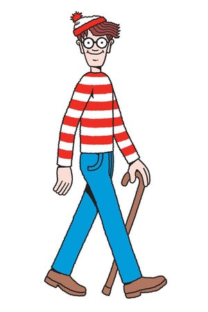
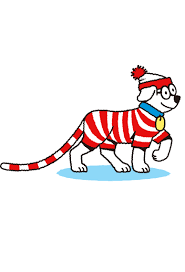
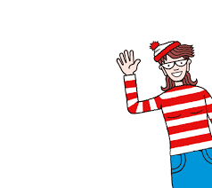
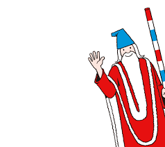
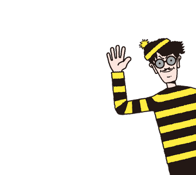

『ウォーリーをさがせ!』（Where's Wally?, 北米版タイトルは Where's Waldo?）は、1987年にイギリス人イラストレーター、マーティン・ハンドフォードによってイギリスで出版された絵本である。同じ年に日本でも発売され、有名になった。日本版の版元はフレーベル館。シリーズ名は『ウォーリーのえほん』。人が入り乱れた絵の中からウォーリーや仲間たち、巻物などを見つけ出す。
    
本作の主人公。赤と白の縞模様の服・長靴下・帽子、ジーパンを身に着て、眼鏡をかけて杖を突いている。茶髪で、細長い体型。しろひげの命令で、あらゆる異世界に行っては命令を遂行している。常に笑顔で、明るく聡明。アニメでは魔法使いのおじいさんから依頼を受け、おじいさんから託された魔法の杖で異世界の事件を解決していくが、並大抵のことでは驚いたり、怖気づいたりしないタフな精神領域を持つ。 日本版での呼称は原著と同じ「ウォーリー」であるが、北米版は「Waldo」（ウォルド）、フランス版は「Charlie」（シャルリ）、ドイツ版は「Walter」（ウォルター）など、他国版では呼称が変更されているものもある[1][2]。
白い犬。ウォーリーと同じような服を身に着けている。作品中にはしっぽしか登場しない。アニメ版ではカタコトだが言葉が話せる。また、赤と白の縞模様だったしっぽが白一色になっている。
ウォーリーのガールフレンド。ウォーリーと同じような服を身に着けており、下半身のみ専用のデニムのスカートと紅と白の縞模様のタイツを履いている。杖は持っていない。作品によっては名前が「ウィルマ」になっている。アニメでは映画館の受付を行っており、彼女が持ち込んだカメラで事件を解決したことがある。
魔法使い。赤い服、青い帽子を着ている。赤・白・青の杖を突いている。白髭をとても長く伸ばしている。アニメでは「魔法使いのおじいさん」という名前で統一され、様々な世界で起きている事件の解決をウォーリーに依頼し、解決へのヒントを教えて居なくなるが、話によってはモブキャラクターとして登場することもある（その時は赤と白の縞模様のポールを持っている）。
ウォーリーに外見が似た悪役。黄色と黒の縞模様の服と帽子、黒い長ズボンを着ていて、灰色のレンズの眼鏡をかけ、口髭を生やしている。ウォーリーの杖を狙うが、いつも失敗ばかり。作品によっては「オズロー」と表記されている。アニメではその話の悪役と共同戦線を張ることもあるが、大抵は邪魔者扱いされてしまったり終始物語に加わること無く知らず知らずに酷い目に遭ったりするのがほとんどである。また、ウォーリーたちと同じく丸形だった眼鏡が半円型になっている。